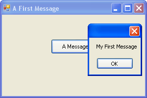
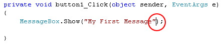
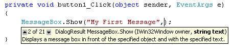
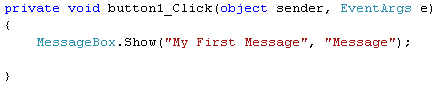
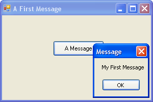
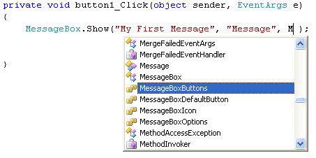
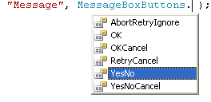
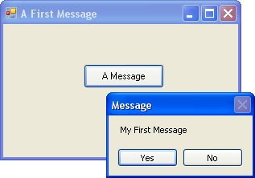
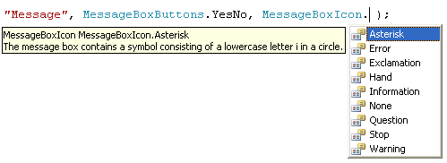
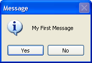

More about the C# MessageBox
<< Continues from the previous lesson
If you look at the message box we created in the previous section, you'll notice there's no Title in the blue area to the left of the red X - it's blank:

You can add a Title quite easily.
Click OK on your Message Box. Then click the Red X on your programme to exit it. This will return you to Visual C#. Go back to the coding window (press F7 on your keyboard, if you can't see it).
Position your cursor after the final double quote of "My First Message", circled in red in the image below:

Now type a comma. As soon as you type a comma, you'll see the list of Show options again:

Type the following:
"Message"
Again, you need the double quotes. But your line of code should look like this:

When your line of code looks like the one above, Run your programme again. Click your button and you should see a Title on your Message Box:

Other Button Options
Rather than having just an OK button, you can add buttons like Yes, No, and Cancel to your C# message boxes. We'll add a Yes and a No button.
Return to your coding window. After the second double quote of the Title you've
just added, type another comma. Hit the spacebar on your keyboard once, and
you'll see the IntelliSense list appear. (If it doesn't appear, just type a
capital letter "M").

The one that adds buttons to a message box is, you won't be surprised to hear, MessageBoxButtons. Press the enter key on your keyboard when this option is highlighted. It will be added to the your code. Now type a full stop (period) after the final "s" of MessageBoxButtons. You'll see the button options:

Double click the one for YesNo, and it will be added to your code.
Run your programme again, and click your button. Your Message Box will then look like this:

Adding Icons to a C# Message Box
Another thing you can add to brighten up your Message Box is an Icon. It's easier to see what these are than to explain!
Type another comma after MessageBoxButtons.YesNo. After the comma, type a capital letter "M" again. From the IntelliSense list that appears, double click MessageBoxIcon. After MessageBoxIcon, type a full stop to see the available icons:

We've gone for Asterisk. Double click this to add it to your code. Run your programme again to see what the icon looks like on your Message Box:

Looks pretty impressive, hey! And all that with one line of code!
We'll move on to the important subject of variable, in the next part. First, try this Exercise.
Exercise
Try the other icons on the IntelliSense list, and see what they look like when your programme runs. Does the Information icon differ from the Asterisk? (To quickly display the IntelliSense list again, delete the word Asterisk from your code, then delete the full stop. Type the full stop again, and the IntelliSense list will reappear.)